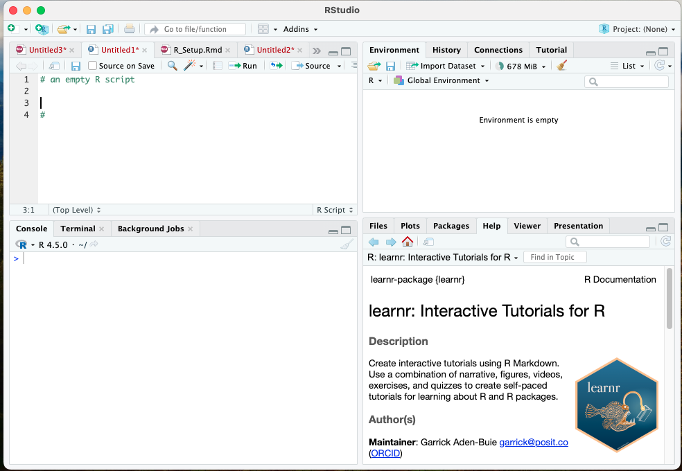

Information
Introduction
In this tutorial, we will introduce some of the basics regarding
R code and the R environment. We will also
explain how to access and run tutorials for this class, as well as
externally created tutorials that accompany the text R for Data
Science (2e). As a reminder, the book is available at this link here.
R certainly has a learning curve to it, and it can be
more complicated than other programs. This is because it is also very
flexible and adaptable. R can accomplish complex and
tedious computations in a few lines of code, but the tradeoff is that
our code must be very precise.
In the R_Setup tutorial, we learned about the general
form of functions:
functionName(argument1 = value1, argument2 = value2, and so on)and we learned two very important functions:
install.packages() and library().
Exercise 1
To reinforce what we’ve learned, let’s load the
tidyverse package below.
library(...)We will install and use many different packages throughout the
semester. Let’s install a new one now called
r4ds.tutorials. Complete the text below:
install.packages("pkg_name_must_be_in_quotes")We will rely on this package in the early stages of the course. This package was written and recently distributed by David Kane:
Kane D (2025). r4ds.tutorials: Tutorials for “R for Data Science”. R package version 0.3.2.9003, https://ppbds.github.io/r4ds.tutorials/.
R and RStudio Basics
RStudio includes 4 windows:
- The console is where code is executed. Here, input and output are shown, and code can be written and executed directly
- script or syntax editor. Here we write longer lines of code and then send all or part of the script to the console to run it.
- The RStudio Environment which shows available data,
saved objects, functions, script history, and includes a
tutorial tab
- Environment also includes
Import Datasetbutton, a point-and-click convenience function for reading in data
- Environment also includes
- utility pane, which can show plots, tables, help windows, and file paths

Objects
Data analysis in R often invoves long series of codes
with multiple functions that build on each other and multiple things
(e.g., variables) that we perform those functions on.
Thankfully, R is an object-oriented coding language,
meaning we can create placeholders called “objects”
that store data, functions, or even the result of functions.
To create an object, we use the assignment operator,
<-. The assignments have the form of
object <- valueThe assignment operator is read as “gets”, as in, “the
object gets this value.
Here is an example. In the code chunk below, type 8 + 5
and run code. This is equivalent to running this math once in the
R console.
8 + 5The result of the function (the + is a math function) is
printed in the console; however, if we wanted to do the calculation a
second time, we’d have to re-type 8 + 5. Instead, we can
assign the number 13 to an object:
thirteen <- 13(be sure to hit “Run Code”)
Now if we call this object in the console or by running code, it will output what is stored in the object - namely, the number 13.
thirteenWe can also assign the result of a function, such as
8 + 5, to an object.
thirteen <- ...
thirteenTo make a short story long, R recognizes 8
and 5 as numeric objects, and the
+ is a function that performs addition to numeric objects.
The result is the number thirteen, which is saved in the assigned object
thirteen. This is why it does not simply print out
8 + 5.
R is very sensitive to the type of variable or input
that it is receiving. The most common types are
numeric(also calleddoubleordbl),factororfct, andcharacterorchr.
For example, we can tell R that the variable is a
character by using quotations. Run the following to see the
difference:
thirteen <- "8 + 5"
thirteenOur reading assignment this week discusses other types of data in
R. We will cover variable types and some of these coding
quirks extensively throughout the semester.
Accessing Tutorials
We will use tutorial modules like this one as the bulk of our content
throughout the semester. There are a suite of pre-built tutorials in the
r4ds.tutorials package and the learnr package.
Additionally, I will create tutorials that can be accessed through a
custom R package shared through GitHub.
As a reminder, we isntalled the following packages when following the
R_Setup tutorial. If you have not already, be sure to type
or copy/paste this code onto your local RStudio console and make sure it
runs.
install.packages("learnr")
install.packages("remotes")
install.packages("tutorial.helpers")
#install.packages(r4ds.tutorials) already completed previouslyTypically, the tutorial scripts will also load any necessary packages, but it is useful to have all packages installed locally, just in case.
Launching tutorials
To launch a tutorial on your own computer (laptop or lab PC), we will
use a function from learnr that is called
run_tutorial(). In this function, you will provide the name
of the tutorial and the name of associated package. Here is an
example:
learnr::run_tutorial("rstudio", package = "tutorial.helpers")As an aside, this specific syntax above with the double colon
:: is a special use where we call a function from a
specific package without loading the entirety of the package into the
active library. In other words, learnr is installed, but
you do not have to run library(learnr) to access the
run_tutorial() function when it is written this way.
Each time a tutorial is assigned, I will provide the one-liner code needed to open it.
r4psych.tutorials
I have also created a custom package containing tutorials, exercises,
and homework assignments for this class. To access tutorials for
additional content or assignments in our course, you will need to
download my package from GitHub. The package is called
r4psych.tutorials. Always install the latest version before
launching a new tutorial or assignment module. To install, run:
remotes::install_github("luningham-lab/r4psych.tutorials", force=TRUE)To walk through this code:
remotesis an additional package that can access content from the Web.install_githubis a function that will installRpackages that are uploaded to the website GitHub and not necessarily available on the ComprehensiveRArchive Network (CRAN). Packages can be updated and distributed much quicker through GitHub than CRAN.luningham-labis my GitHub account, and this directs theinstallfunction to the correct user’s library to find the package.force=TRUE: argument to ensure the latest version is installed
This package is a living and breathing entity, so it will be important that you re-install it with the above code frequently.
Now you can load tutorials from this package (again, code will be provided):
learnr::run_tutorial("module1", package = "r4psych.tutorials")Knowledge Check
Suppose we need to use a new package for our research, such as the
psych package. In the code chunk below, write both lines of
code needed to install the package and then load it into the active
library.
Question 2
In the RStudio IDE, what is the difference between the syntax editor window and the console window?
Question 3
What is the purpose/usage of the assignment operator, and what is its symbol?
Question 4
Below, assign a number to the object x1 and another
number to the object x2. Then, assign their sum to the
object y. Examine y (run it on its own line)
to make sure everything executed as expected.
Question 5
More about tutorials
In each tutorial, there will be a set of exercises for you to complete. For non-coding questions, you write your answer and then hit the “Submit Answer” button.
For coding questions, make sure to hit “run code”. Some browser windows will show a red or gray circle with diagonal when you hover your mouse over “run code”, but if you click, it should still work.
Clicking “Start Over” — small letters at the bottom of the left-hand side menu — deletes all your work and allows you to begin the entire tutorial again.
If you don’t click “Start Over”, all of your work will be saved - even if you exit out of the tutorial in the middle.
The tutorials may load in the “Viewer” or “Tutorial” tab of RStudio, or they may launch in a new window. In a new window, the table of contents and extra buttons are more visible, so that is typically preferred.
You will often be askd to execute an R command in the
R Console, the tab on the left portion of your RStudio
screen. Type version[['version.string']] into the Console
and hit the return/enter key.
Do not just type the command into the answer box! You must type or paste the command into the R Console and then execute the command.
Copy/paste the command and the result into this box.
I’ll typically provide example answers after you submit your own response. Don’t be concerned if your submitted answer differs from the example below.
> version[['version.string']]
[1] "R version 4.5.0 (2025-04-11)"
>Tutorial workflows will often look like this. You will be asked to run a command in the Console, generally in your main RStudio window. You run it, then you copy/paste both the command itself and the response returned directly in the console. This instruction to copy/paste the command/response is so common, it is often abbreviated CP/CR.
RStudio and your R installation have some default settings which are not good for new users. Run this command at the Console to change them:
tutorial.helpers::set_rstudio_settings()
CP/CR.
The output from this function will report the changes, if any, which
were made. To learn more, look up the help page by running
?set_rstudio_settings in the Console.
At the end of every tutorial, you will save your work, and often you will submit it via TCU Online. This will always appear in a tutorial section labeled “Download answers.”
After hitting the “Download” button, you will be prompted to save a
file named rstudio_answers.html. This file will be saved in
the default Downloads folder on your computer.
In most cases, you can use the default file name, which will usually
be of the form name-of-tutorial + _answers +
.html.
Download answers
- Click the button to download a file containing your answers.
- Save the file onto your computer in a convenient location.
(If no file seems to download, try clicking with the alternative button on the download button and choose "Save link as...")